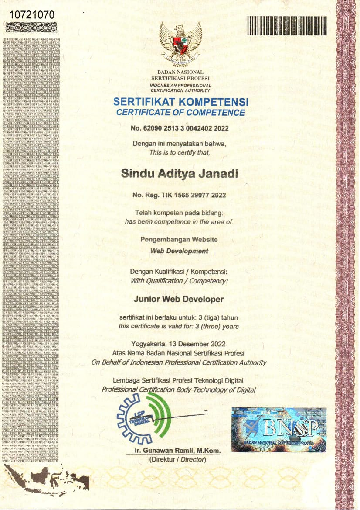

Junior Web Developer
Untuk test Sertifikasi tersebut saya menggunakan bahasa php dan bootstrap serta framework CI3

Junior Web Developer
Sertifikasi Junior web developer Telkom prima cipta certifia.
Cloud Practitioner Essentials
Sertifikasi dicoding dalam bidang Cloud Practitioner Essentials yang memahami dasar AWS Cloud
Sertifikasi dicoding membuat aplikasi backend
Sertifikasi dicoding dalam bidang aplikasi backend Bookshelf API
Sertifikasi Pemahaman Pemograman dasar
Mempelajari dasar dasar pemograman yang ada